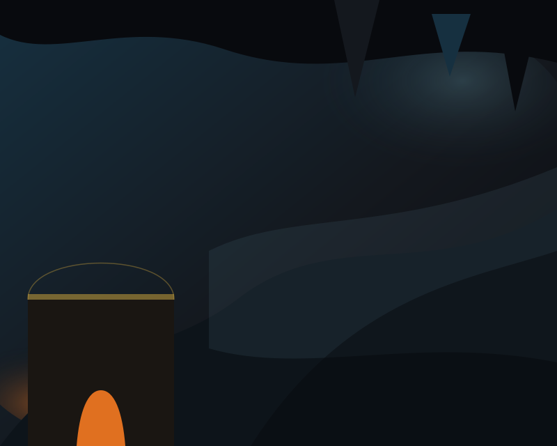

Home · World
The cavern
Firelight against cave dusk
The wilderness stays dark, hungry, and close. You farm the cave’s edges. Unexplored dark waits beyond the last lantern.
Hostile cavern · warm settlement
Fog hides what you have not yet carved. The cavern is hostile; the settlement is warm — soot, stone, and antique metal, not comedy or candy magic.
You are not a hero on a raid. You are the mind of a hall. Dig tunnels, raise masonry, and turn a foothold of firelight into a working settlement while the mountain stays close.
The mountain does not care if you are pretty. It cares if the hearth stays lit.

Dusk, fog, and the last lantern
Cool cavern dusk against a warm, handcrafted settlement. Fireplace light and dwarf exploration push fog back in Chebyshev rings. What you have not seen stays unexplored — not a grey overlay for show, but a rule of the sim.
Volume World is the product direction: a dollhouse cutaway into the cave, live Z, and a starter hall carved five deep. The 2D New Game still exists as a debug path until cutover. There is no surface campaign.